KokomoSwap KokomoSwap 是基于币安智能链的 AMM（自动做市商）DEX（去中心化交易所），旨在以充满乐趣和盈利的方式促进加密资产的无缝交易。 KokomoSwap 是一支由经验丰富的开发
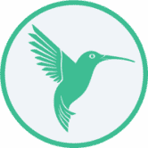 Kolibri Kolibri 是一种基于 Tezos 的稳定币，建立在称为 Ovens 的抵押债务头寸 (CDP) 之上。 Kolibri 使用 CDP 来抵押软锚定美元稳定价值资产 kUSD。数据是通过 Oracle 合约通过 Harbinger Price Feed 提供的。 Kolibri
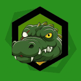 Kragger Inu Kragger Inu 是 CRO 链上独一无二的实用代币。总供应量10亿枚，在mm金融上市。 Kragger Inu 的目标是通过选择名称和徽标来带来改变。在向庞大的 cronos 社区和得到它认可的代
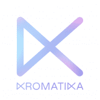 Kromatika Finance 它是如何工作的 为什么 KROMatika 隐藏的宝石：在 DAPP 中，用户可以为他们的交易自动处理选择较低的目标 gas 价格，甚至进一步降低服务费，牺牲一些处理速度来降低服务
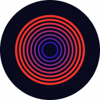 Kronos DAO Kronos DAO 是 Klaytn 链上第一个基于 KRNO 代币的去中心化储备货币协议。每个 KRNO 代币都由 Kronos DAO 国库中的一揽子资产（例如 KDAI、KRNO-KDAI LP 代币等）支持，赋
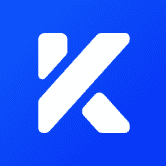 KSwap KSwap Finance 是一个部署在 OKExChain 上的去中心化交易平台。 KSwap Finance基于成熟的货币池自动做市算法（AMM），实现了数字货币兑换、流动性挖矿、交易挖矿等多
Kunai DeFi 高 APR 的高产农业！ - Kunai 是 POLYGON 上的一个新 DojoFarm Finance 项目 在 KUNAI 中，您将能够质押您的 $DOJO 并 FARM 您的 $DOJO-LP 并以 0% 的存款费用赚取 $KUNAI 预售 通货紧缩 自动减排功能 可持续的代币经济
Lacucina LaCucina 是 DeFi 领域的一个新平台，为流动性提供者提供额外的流动性奖励，并利用 NFT 在生态系统中与社区驱动联合在一起。 LaCucina 是下一代 DeFi 项目启动板，将用户和项目联
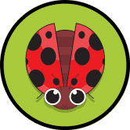 LadyBeetleSwap LadyBeetleSwap介绍 LadyBeetleSwap 是专门在币安智能链（BSC）上运行的高频收益农业优化器。 它会自动将用户存入的资产放入利润最高的矿池中。 LadyBeetleSwap 将
Ladybug Swap Ladybug Swap 是一个在 BSC 上运行的收益农场和 AMM。它是由一支优秀且经验丰富的团队设计和执行的。 我们的团队决定将挑战推得更高，并证明查看 Ladybug Swap 的主要功能
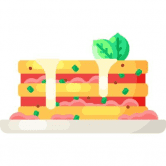 Lasagna Finance 千层面金融 为 BSC 的厨师打造的农场！ 质押LP代币赚取LASAGNA 帽子是烤宽面条金融？千层面金融。为 BSC 的厨师打造的农场！质押 LP 代币以赚取 LASA
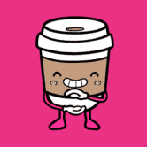 LatteSwap LatteSwap 是一个去中心化交易所，专注于将 DeFi 和 NFT 空间及其 NFT 集成功能连接起来。该平台为其用户提供三个主要功能：交易、赚取和收集。用户可以轻松交易加密货币
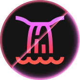 Lavafall Finance Lavafall 是 Fantom 网络上新的稳定和智能 DeFi 代币，目标是成为高收益农业的下一个演变，帮助投资者保护他们的资金，因为我们提供一个透明的环境，让用户可以无忧地使
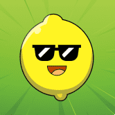 LemonFarm LemonFarm 是 Binance 智能链上全新的去中心化交易所，被称为第二代收益耕作机制，通过 AUDIT 和 Timelock 合约在发布时允许永久价格上涨和可持续且有利可图的耕作收益。 $LEMON 是一种通
LemonSwap.Space LemonSwap 是 BSC 上的一个新 DeFi 项目，具有通货紧缩的代币模型，无限供应 LEMON 代币。 在审查了几种单产农业模式后，我们决定在我们的平台上采用低排放率、低供应、分层
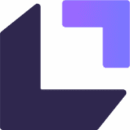 LendfMe Lendf.Me 是一个 dForce 生态系统项目和货币市场协议，通过匹配任何 ERC20 兼容资产的供应和借贷来实现即时可访问性和流动性。您可以存入稳定币以赚取收益或通过加密抵押
LendHub LendHub 是最安全的去中心化借贷平台，旨在促进跨链借贷。 来自顶级发展贷款人的竞争性融资。 75% LtGDV 或 90% LTC。 Low Rates fr 4.5%pa。最大杠杆。费率为 0.54% p/m
LeopardSwap (BSC) 概述： 农场即将推出！！！ Polygon 和 BSC 网络上的 Panther Clone 多链 AMM 和 Yield Farm 高 APY 游泳池和农场 彩票系统 老虎机投注游戏 濒危动物 NFT 什么是豹交换？ LeopardSwap 首先是一个去中心化的社
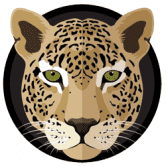 LeopardSwap (Polygon) 概述： 农场即将推出！！！ Polygon 和 BSC 网络上的 Panther Clone 多链 AMM 和 Yield Farm 高 APY 游泳池和农场 彩票系统 老虎机投注游戏 濒危动物 NFT 什么是豹交换？ LeopardSwap 首先是一个去中心化的社
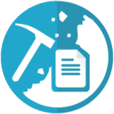 LetsMineSome 感谢我们的矿池合约，挖矿 GRV 从未如此简单！我们的合约是通过不断向 gravyhftdefi 合约发送 TX 来挖掘 GRV，TX 的频率基于矿池 CPU 容量。两台服务器在后端并行运行，
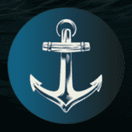 Leviathan Leviathan 是一个受 TITANO 启发的质押协议。由来自 TempliersCrypto 的 doxxed 团队构建，并由 Solidity Finance 审计。每 30 分钟通过奖励赚取固定的 151,631% APY。 最近没有太多消息，因为大海（和市场）很平
Libera.Financial LIBERA - 世界上第一个在中心化交易所（CEXes）上市的三重被动收入和超通缩代币 Libera Miner - 将您的 LIBERA-BUSD LP 存入池中，并以 3% 的每日回报率赚取 300% 的回报 BUSD 3x Miner - 每
Libera.financial 世界上第一个三重被动收入和超通缩令牌进入中心化交易所（CEXes） Libero Financial 在 Defi 领域的下一个突破——一项创新，使 158,893.59% 的固定 APY 代币成为超通缩 一项改变整
Libero Financial Libero Finance 正在改变 DeFi，其双重奖励 158,893.59% 固定 APY 加上 226% BUSD APR 被动收入来自交易量，每 30 分钟复合奖励，在一个简单的买入持有赚取系统中，无需做任何事情，就可
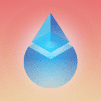 LIDO Lido Ethereum Liquid Staking Protocol 建立在 Ethereum 2.0 的 Beacon 链上，允许其用户在 Beacon 链上获得 Staking 奖励，而无需锁定 Ether 或维护 Staking 基础设施。 用户可以将以太币存入 Lido 智能合约，并获得 stETH 代币作为回
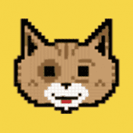 LIFE Finance LIFE 是 Fantom 网络上的新层和独立平台 DeFi 平台，它是🔥FATFIRE🔥家族的一部分。通过在 Fantom 网络上质押和赚取 LIFE 代币，以零低存款费用从您的代币和 LP 代币中赚
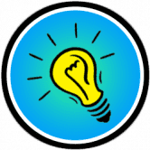 LightbulbFinance LightBulb Finance 是运行在币安智能链和 Pancake 交易所上的去中心化交易所，具有许多其他功能，可让您赚取和赢取代币。 我们正在尝试做的是创建一个永久通货紧缩令牌，LA
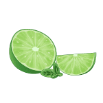 LimeSwap LimeSwap 是在币安智能链和 Pancake 交易所上运行的去中心化交易所，具有让您赚取和赢取代币的额外功能。 我们是一个由充满激情的软件开发人员、数字营销人员、管理顾
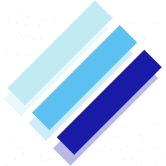 Linear Finance 线性金融（“线性”）是一种非托管、跨链兼容的 delta-one 资产协议。 Linear 的长期 DeFi 愿景是增加包容性并使投资资产（数字和传统）的获取民主化。投资者能够轻松快速
Lino Finance 我们相信 BSC 生态系统的力量并相信我们的社区。我们将从 bsc 代币开始，并继续作为 de-fi 平台。加入我们并保持安全！ Lino 在金融词典中的定义——由免费的在线英语
Mars Ecosystem 火星生态系统通过将稳定币的创建和使用整合到一个稳定但去中心化的生态系统中来解决这个问题。 Mars Stablecoin 与 Mars DeFi 平台之间的关系创建了一个正反馈循环并产生了
Matrix Farm 什么是矩阵？ 1.Matrix 是一个农场聚合器，可帮助用户简化他们在 Fantom 庞大生态系统中的体验。事实上，作为一个农场聚合器，Matrix 允许用户轻松地将他们的 FTM
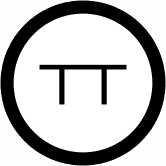 Matter DeFi Matter DeFi 是一个先进的单产农业平台，旨在为 Tezos 用户提供长期可持续的农业机会。 Matter DeFi 的旗舰功能是 $MTTR 代币的合约级别自动回购和销毁。平台产生的所有费用都会在
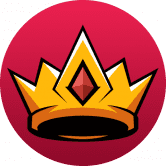 Maximus Maximus 是 Avalanche 的新一代产量农业聚合器和优化器！ Maximus 以其独特的功能为 Avalanche 生态系统带来了新的气息，并将通过一种新的代币架构为整个生态系统提供最有利可图的金融
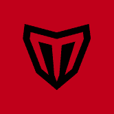 MeanFi 平均社区 官方平均 DAO 社区链接 Mean DAO 社区在 https://discord.meanfi.com 上的 Discord 上运行。 您也可以在 Twitter 上与我们一起在 https://twitter.com/meanfinance 资金流 资金流代表了随着时间的推移持续支付的想法。区块编号用于
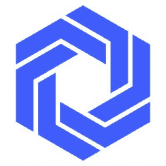 Mercor Finance Mercor 是第一个也是唯一一个提供算法复制交易的 DeFi 平台。 Mercor 平台允许您直接投资由领先的对冲基金、才华横溢的开发人员和加密爱好者创建的算法。 Mercor 是第一个也
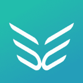 Mercurial Mercurial 正在建立新的流动性系统，以最大限度地提高 Solana 上稳定资产的效用和收益。 我们为 Solana 带来的一些创新： 动态保险库 动态做市库以最大限度地利用资本 交换池 与